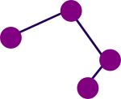
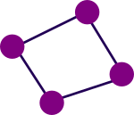
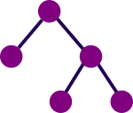

Grafy
Zdravím! Dnes si spolu ukážeme, co znamenájí v informatice grafy.
Slovo graf má totiž více významů, např. grafy funkcí, sloupcové grafy pro zobrazování dat a ty, co nás budou zajímat - grafy reprezentující vztahy mezi objekty.

Graf je tvořen hranami a vrcholy. Hrana musí být zakončena vrcholy z obou stran. Hrany propojují vrcholy. Můžeme si to představit jako puntíky spojené čarami.
Co můžeme grafy modelovat?
- Sociální sítě - vrcholy jsou lidé a hrany přátelství mezi nimi
- Města (vrcholy) a silnice (hrany), které je propojují
- Webové stránky - stránky = vrcholy a odkazy = hrany
K čemu grafy slouží?
- Nalezení cesty - hledáme cestu mezi vrcholy A a B
- Izomorfní grafy - hledáme grafy, kde mají vrcholy stejná spojení
- a mnoho dalších
Orientované vs. Neorientované grafy
- Orientované grafy - víme, odkud kam hrana vede, jsou to takové jednosměrky
- Neorientované grafy - můžeme hranou chodit tam i zpět
Jaké máme typy grafů?
- Cesta - posloupnost vrcholů, kde je jen jeden způsob jako se dostat z vrcholu A do vrcholu B 
- Kružnice (cyklus) - vrcholy grafu jsou spojeny dokola 
- Strom - graf bez kružnic, kde mezi každými dvěma vrcholy existuje cesta
- Důležitý typ grafu - reprezentuje např. strukturu adresářů (složek) v počítači
